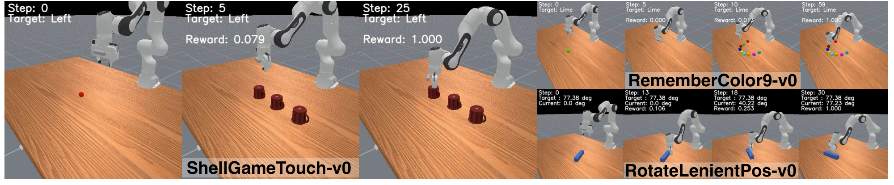
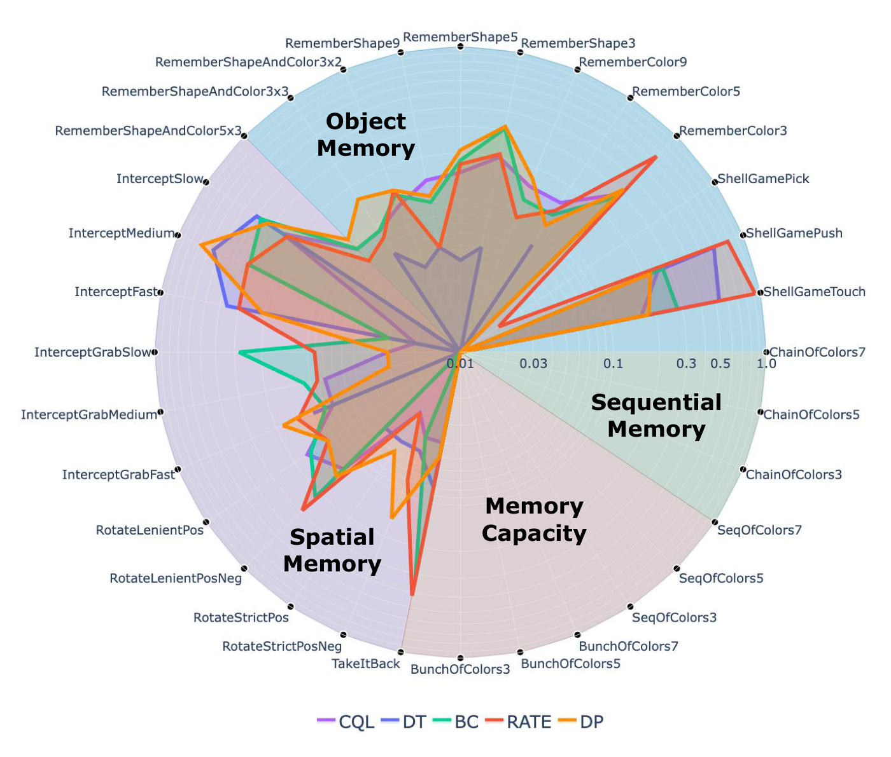

能拿到一套把「记忆需求」隔离成单变量的桌面操作任务族（RL 版 32 个任务 / 语言版 90 个环境），以及 VLA 在记忆任务上「掉得多快」的横评数字；代价是它只报成功率、场景高度原子化，任务长度相差 86 倍因而不可直接平均，而且论文正文的 VLA 评测只覆盖 5 个任务。
- 最小可复用件
- 三段式 episode 模板（观察窗 5 步 → 空桌延迟 5 步 → 响应窗到 T）+ 每任务的 oracle 变量定义 + 3/5/9 与 3/5/7 这种同结构难度阶梯。可以直接搬到自有任务上做记忆消融，不必依赖它的仿真器。
- 主要风险
- 不同任务 T 从 25 步到 2160 步，成功率不是同一量纲，跨任务平均会失真；state/oracle 观测模式会给到真值信息，只应作「任务可解」上界，混进训练就变成信息泄漏；90 任务与 10 类记忆来自仓库发布，不在论文正文里。
- 复现门槛
- 仿真侧单张 A100 可跑（ManiSkill3，示例 512 并行环境）；VLA 微调每任务 250 条专家轨迹、50k 迭代；离线侧每任务 1000 条成功轨迹；真机实验用 SO-101 + \(\pi_{0.5}\)，每任务 300 条遥操作演示。
1 核心摘要
问题。记忆增强 RL 的评测长期是碎片化的：表 2 统计的近二十个记忆智能体，几乎每个都只在自己随论文发布的环境里验证，彼此任务集重叠极小；甚至不少工作在 Atari + frame stacking 这种本质仍是 MDP 的设定上宣称「记忆能力」。机器人操作这一侧更极端——表 3 里 ManiSkill3、RoboCasa、RLBench、Meta-World、robosuite 等主流框架在「是否有记忆任务」「是否原子任务」两列上几乎全为空；BEHAVIOR-1K、iGibson 2.0 虽然含记忆需求，但任务过于复合，观测到失败也说不清是记忆坏了还是感知/规划坏了。于是出现了本文开头那张漫画式的困境：A 说「我在我的任务上更好」，B 说「我在我的任务上更好」，没人能判定谁的记忆机制更好。
做法要点。作者把问题拆成三层。第一层是分类法：从发展心理学借来客体永久性、工作记忆、记忆广度等概念，把记忆密集型任务划成四类——Object Memory、Spatial Memory、Sequential Memory、Memory Capacity（第 4.2 节），并给出形式化定义：记忆密集型任务是一个 POMDP，其中存在相关时距 \(\xi \gt 1\)，即「关键事件发生」与「必须回忆该信息」之间至少隔一步。第二层是 MIKASA-Base：把散落在 POPGym、Memory Gym、DMLab、MiniGrid、BSuite 等处的开源记忆环境统一到一个 Gym 风格 API，并按「向量诊断层 / 图像复杂层」两级组织，便于先把记忆机制单独验干净，再加感知难度。第三层是 MIKASA-Robo：基于 ManiSkill3 自建 32 个桌面操作任务、12 个任务族，每族用同一套 phase 结构把记忆负荷参数化。
关键数字。32 个任务的超时从 60 步（RememberColor/Shape 系列）到 180 步（TakeItBack）；五类观测模式（state / RGB / joints / oracle / prompt）与两套奖励（dense / sparse）可任意组合，标准记忆测试配置是 RGB+joints；另有每任务 1000 条专家轨迹用于离线 RL。仓库的语言条件版本进一步扩到 90 个环境、10 类记忆、22,500 条专家轨迹，episode 长度 25–2160 步，并按 Short/Medium/Long 三档切分（38/30/22 个任务）。
判定：这不是一篇记忆方法论文，而是一台把「记忆需求」做成自变量的评测装置。它最值得抄的不是排行榜，而是「观察窗—空窗—响应窗」这个可参数化的时序骨架，以及表 1 里那列 oracle 变量——它等于替你写清了「这个任务到底要求记住什么」。
2 记忆环节定位
基准本身不实现任何记忆：没有 bank、没有压缩器、没有检索器。它命中的是评测这一格，同时对写入触发构成部分约束——因为它用 episode 的 phase 结构规定了「信息何时出现、何时消失、何时必须被用」，等价于规定了记忆的写入时机与读取窗口，但不规定用什么结构去存。
| 维度 | MIKASA-Robo 的规定 |
|---|---|
| 输入 | 逐步观测 \(o_t\)（RGB 双目 或 state 向量）、固定语言指令（语言版）、以及可供调试/上界使用的 oracle 字段 |
| 输出 | 每 episode 的终止标志、稀疏成功位、稠密奖励分量；对外只汇总成功率 |
| 交给下游 | 一个可比的分母：同一任务、同一 T、同一观测模式下不同记忆机制的 SR；以及一套可复用的任务参数（cue 时长、延迟、候选数、序列长度） |
| 在线性 | 任务侧是严格因果 POMDP，策略只能看 \(o_{1:t}\)；但 state 模式与 oracle 字段会把隐藏变量直接交给智能体，作者明确只用它验证「任务可解（SR=100%）」，不用于记忆测试。用错这一条，整个基准就退化成 MDP |
三个必答问题：记忆单位是一个 cue——一个颜色、一个形状、一个被杯子盖住的球的位置、一个被观察到的初速度、一串颜色序列；写入频率是 phase 边界的一次性写入，而不是每步写（观察窗内目标可见 5 步，随后消失），因此它测的是「一次性写入 + 长间隔后读取」，不是流式增量维护；读取条件是动作兑现——在响应窗内 touch / push / pick 到正确对象，或把球停在目标区、把钉子转到目标角。没有「读出向量」这种中间接口，读取成败只能通过行为反推。
3 问题与动机
论文把失败模式拆成三种，且都能在自己的表里指出来。
（1）评测集不重叠，结论不可比。表 2 列出 DRQN、R2D2、GTrXL、AMAGO、RATE、DCEM 等二十余个工作与其所用环境，交叉打勾后可以看到：DMLab-30 与 POPGym 是少数被多方复用的，其余如 car flag、HeavenHell、Object Permanence、Numpad、Memory Maze 基本只服务一两个工作。更刺眼的是「Atari with FrameStack」一列被当成记忆测试——帧堆叠只给了固定 4 帧窗口，本质仍是有限历史的 MDP。
（2）机器人操作侧默认全观测。表 3 用三列（Memory Tasks / Manipulation / Atomic Low-level actions）横评 20 余个操作框架，只有本文与同期 MemoryBench 三列全勾；LIBERO、BEHAVIOR-1K、iGibson 2.0 有记忆需求但任务不原子；VIMA 依赖高层动作抽象，时序记忆根本伸不开；ManiSkill3、RoboCasa、RLBench 等则完全没有记忆任务。作者的判断是：这不是框架能力不足，而是社区没把「记忆」当成需要单独设计的一维。
（3）VLA 的「记忆」被 action chunk 冒充。第 6.4 节选了 Octo、OpenVLA、\(\pi_{0}\)、SpatialVLA 四个基线，它们都没声称实现记忆机制。结果出现一个很能说明问题的分裂：OpenVLA 在 chunk \(K=8\) 时 RememberColor3 成功率为 0.59，而 \(K=4\) 时只有 0.21；作者的解释是「大 chunk 可以在一次生成里把初始线索直接兑现成整段轨迹」，从而绕过记忆，而小 chunk 下早期的正确动作会迅速崩掉。这条观察对任何做 VLA 记忆的人都是直接的对照组设计警告：如果你的基线带大 chunk，你测到的可能不是记忆增益。
动机因此落在「隔离变量」四个字上：任务要短到不需要长程信用分配，又要长到足以让马尔可夫策略必然失败。作者在附录 B 里把这条写得很直白——RememberColor 只要一次遮挡就非马尔可夫，所以 60 步的短 horizon 就够暴露记忆缺陷。
4 基准设计

Figure 2：三个任务的时间切片依次展示被遮挡目标的选择、颜色记忆匹配和目标角度旋转；画面叠加 Step、Reward 与 Target 状态。
4.1 分类法：论文四类，发布版十类
论文第 4.2 节给出四类，每一类都对应认知科学里的一个概念，且都能落到一个具体动作上：
| 类别 | 认知对应 | 论文中的机器人例子 | MIKASA-Robo 中的落点 |
|---|---|---|---|
| Object Memory | 客体永久性、范畴知觉 | 记住自己把哪个水果放进了冰箱 | RememberColor / RememberShape / RememberShapeAndColor，共 9 个任务 |
| Spatial Memory | 空间地图、位置回忆 | 打扫时挪开的杯子要放回原位 | ShellGame、Intercept、InterceptGrab、Rotate、TakeItBack，共 14 个任务 |
| Sequential Memory | 系列回忆、工作记忆 | 记住往汤里下料的顺序 | ChainOfColors，3 个任务 |
| Memory Capacity | 记忆广度 | 擦桌子时同时记住多个物体的位置 | BunchOfColors、SeqOfColors，6 个任务 |
需要分清的是：仓库发布的语言条件版把分类扩到 10 类（Object / Spatial / Sequential / Capacity / Temporal / Tracking / Procedural / Prospective / Checklist / Negative），新增六类分别对应计时（数灯闪次数、在数到第 100 步时搬运）、动态追踪（杯子洗牌后仍要跟住球）、程序性技能（照着一个形状轨迹复现）、前瞻意图（干活途中记住一次灯闪，完工后按对应按钮）、清单核对（逐个试电池并记录哪些是好的）与「缺席判断」（找出之前没出现过的那个物体）。这 10 类的定义与切分只出现在仓库 README 与任务清单中，论文正文没有给出定义，引用时不要写成论文结论。
Figure 3：左右两侧分别是简化的智能体记忆任务与复杂的人类记忆任务；中间标出 MIKASA 的任务设计范围。
4.2 任务族的时序协议：观察窗 / 空窗 / 响应窗
12 个任务族共享同一套三段式骨架，只是参数不同。以附录 K 的时序为准（\(N\) 为要记的项目数）：
| 任务族 | 观察（cue） | 空窗 / 遮挡 | 响应 | 超时 T | 难度轴 |
|---|---|---|---|---|---|
| ShellGame（Touch/Push/Pick） | 0–4 步，球在某位置可见 | 第 5 步三个杯子同时盖下 | 第 6 步起碰/推/提起正确杯子 | 90 | 交互强度（碰 → 推 → 提起 >0.1 m） |
| RememberColor / Shape | 0–4 步，单个方块可见 | 5–9 步空桌 | 第 10 步起在候选里选同色/同形 | 60 | 候选数 3 / 5 / 9 |
| RememberShapeAndColor | 0–4 步 | 5–9 步 | 第 10 步起选「形状+颜色」联合匹配 | 60 | \(3\times2\) / \(3\times3\) / \(5\times3\) 组合 |
| BunchOfColors | 0–4 步，N 个方块同时出现 | 5–9 步 | 第 10 步起触碰全部 N 个，顺序不限 | 120 | \(N=3\) / 5 / 7 |
| SeqOfColors | 0–(5N−1) 步，N 个方块各展示 5 步 | 5N–(5N+4) 步 | 第 5N+5 步起全部触碰，顺序不限 | 120 | \(N=3\) / 5 / 7 |
| ChainOfColors | 同 SeqOfColors | 同 SeqOfColors | 第 5N+5 步起按原顺序触碰 | 120 | \(N=3\) / 5 / 7 |
| TakeItBack | 初始位置可见 | 第二阶段不再可见 | 先搬到目标区，灯变紫后再搬回原处 | 180 | 只有一档，靠双阶段记忆 |
| Intercept / InterceptGrab | 球滚动的若干帧 | 无显式遮挡，靠速度外推 | 把球挡进目标区 / 抓住并举稳 | 90 | 初速 0.25–0.5 / 0.5–0.75 / 0.75–1.0 m/s |
| RotateLenient / Strict | 初始朝向 | 无（但目标角每步以 prompt 给出） | 旋转到目标角并保持静止 | 90 | 单向 / 双向；允许/禁止平移中心 |
注意后两族与前六族的差别：Intercept 与 Rotate 的「记忆」不是被遮挡对象的身份，而是对自身已执行动作的积分（球速、已转过的角度）。这也是表 1 把它们归到 Spatial 而不是 Object 的原因——它们要求维持一个随动作变化的内部量，而不是一个静态属性。
4.3 可观测变量与隐藏变量：oracle 列就是规格说明书
表 1 的 Oracle Info 列是全篇信息量最大的一列，它逐任务写清了「必须被记住的那个量」：
| 任务 | 隐藏变量（Oracle Info） | 含义 |
|---|---|---|
| ShellGameTouch/Push/Pick | cup_with_ball_number | 球在几号杯下 |
| Intercept / InterceptGrab | initial_velocity | 球的初速度（位置序列可从观测推，速度需要外推） |
| RotateLenient / Strict | y_angle_diff、target_angle | 当前相对初始朝向的偏转、目标角 |
| TakeItBack | xyz_initial | 方块的初始三维位置，第二阶段不再可见 |
| RememberColor / BunchOfColors / SeqOfColors / ChainOfColors | true_color_indices | 正确颜色在候选集合里的下标 |
| RememberShape / RememberShapeAndColor | true_shape_indices、true_shapes_info、true_colors_info | 正确形状/颜色组合的下标与属性表 |
形式化上，任务是一个 POMDP \((S, A, T, R, \Omega , O, \gamma )\)，策略只能依赖观测历史 \(\pi (a_t | o_{1:t})\)；记忆需求由相关时距 \(\xi\) 刻画。实际操作上最有价值的是这列 oracle 的三个用途：(a) 在 state 模式下作为上界，验证任务本身可解（作者用 PPO-MLP 在全部任务上打到 100%）；(b) 在训练专家数据时作为特权信息，让采集策略稳定成功；(c) 作为评测时的禁止输入清单——凡是出现在这列里的量，都不能进策略的观测。
4.4 观测、动作、奖励与仿真后端
观测有五种可组合模式：state（完整向量，含 oracle 与 TCP 位姿）、RGB（顶视 + 夹爪两路图像，VLA 侧为 \(128\times128\)）、joints（关节状态 + TCP 位姿，离线数据里是 25 维）、oracle（任务相关调试字段）、prompt（静态任务指令）。论文明确写了：任意组合都可以，但 RGB+joints 是标准记忆测试配置，state 模式只留给「验证这是不是一个 MDP 可解任务」。动作是 8 维末端增量位姿（ManiSkill3 的 pd_ee_delta_pose 控制器）。奖励两套：稀疏为 0/1 成功位；稠密由「夹爪到目标距离 + 到目标区距离 + 关节速度平滑项 + 静止保持项 + 完成奖励」逐项加权而成，每个任务族的权重组略有不同（附录 K 逐族列出）。后端是 ManiSkill3，默认 Franka Panda，GPU 并行（官方示例 num_envs=512），并支持换臂——附录 B 的 Figure 7 用 Unitree 等不同机械臂跑了同一个 ShellGameTouch 配置。
场景刻意保持原子：只有图元形状（方块、圆柱、钉子、球、杯子），不加纹理、不加杂波。作者的理由是避免把记忆失败与感知/接触失败混在一起；同时也给了升级路径——同一记忆结构可以换成 YCB 物体（RememberObject3-v0）或加杂波（附录 B 的 Figure 8/9），记忆需求不变而感知难度上升。
4.5 语言条件如何给出（语言版，非论文正文）
论文第 6.4 节只给 5 个任务配了指令（见表 5），且每个任务一条固定指令，不是逐 episode 改写：
| 任务 | T | Language instruction（原文） |
|---|---|---|
| RememberColor3/5/9-v0 | 60 | Remember the color of the cube and then pick the matching one |
| ShellGameTouch-v0 | 90 | Memorize the position of the cup covering the ball, then pick that cup |
| InterceptMedium-v0 | 90 | Track the ball's movement, estimate its velocity, then aim the ball at the target |
仓库的语言条件版则给 90 个环境各写了一条指令（mikasa_robo_vla_envs.csv 的 language_instruction 列），措辞更强调「观察—等待—兑现」三段，例如 Observe which cup hides the ball, wait, then touch that cup. 与 Count how many times the blue lamp blinks, press the red button exactly that many times when the red lamp turns green.
32 → 90 的关系要说清：一半是包装，一半是新增任务族。按清单逐条比对，90 个环境里既有原始 32 族的直接语言化版本（ShellGameTouch/Push、Intercept 与 InterceptGrab 各三档、Rotate 四种、TakeItBack、Remember 三族 9 个、BunchOfColors / SeqOfColors / ChainOfColors 各 3 个），也有在此基础上拉长的 -Long 变体（Remember 族 600 步、Seq 与 Chain 800–1200 步、ShellGameShuffle 600 步），另一半则是论文里不存在的新任务族：ShellGameShuffle（洗牌追踪）、FindImposter（缺席判断）、BatteriesChecker（清单核对）、BlinkCountButtonPress（计数与定时）、TraceShape / TraceShapeSeq（程序性复现）、TimedTransfer（定步搬运）、GatherAndRecall（前瞻线索）。所以它不是「同一套任务换了句话」，而是以原任务为骨架、按新的记忆类型扩出来的超集；引用 90 这个数字时，不能把它当成论文 32 任务的评测结果。
这意味着语言在这里不是变量而是常量：它不测指令泛化，只测「同一句话在长间隔后还能不能被执行」。如果你的研究问题是语言条件记忆，这个基准只能作为起点。
5 证据与实验
基准论文的「实验」不是在证明某个方法强，而是在证明三件事：任务可解、任务确实需要记忆、现有方法在记忆需求升高时会掉。三条分别对应 state 上界、RGB 对比、以及 VLA/离线横评。
| 协议 | 设置 | 指标 | 规模 |
|---|---|---|---|
| Online RL | PPO-MLP（无记忆基线）、PPO-LSTM、SAC、TD-MPC2；state 与 RGB+joints；dense 与 sparse | 成功率（学习曲线） | 3 次独立训练 \(\times\) 每次 100 episode（seed 1–100），单卡 A100 |
| Offline RL | RATE、DT、BC、CQL、DP（另有 DMamba 等）；两路 RGB；sparse 为主 | 成功率 | 每任务 1000 条 PPO 专家轨迹 |
| VLA | Octo-small、OpenVLA（\(K=4\)/8）、SpatialVLA（\(K=4\)）、\(\pi_{0}\)（\(K=4\)） | 成功率（100 episode 的 mean \(\pm\) sem） | 每任务 250 条专家轨迹，50k 迭代 |
| 真机 | \(\pi_{0.5}\) + SO-101，三阶段协议 | is_touched / is_picked | 每任务 300 条遥操作演示，30 episode 评测 |
RL 协议与 VLA 协议的四条差别，混用会直接毁掉可比性：(1) 覆盖——RL 侧 32 个任务全测，VLA 侧论文只测 5 个（ShellGameTouch、InterceptMedium、RememberColor3/5/9），而这 5 个恰好是四类记忆里最容易的两类；(2) 长度——论文的 VLA 评测沿用原 T（RememberColor 60、ShellGame 90），仓库语言版却把短档压到 25–30 步，后者更容易刷高；(3) 数据——在线 RL 从零训练，离线 1000 条/任务，VLA 只用 250 条/任务微调 50k 迭代，且 Octo 只训 readout head；(4) 汇报——RL 是 3 个种子 \(\times\) 每次 100 episode 的均值，VLA 是单模型 100 episode 的 mean \(\pm\) sem。指标本身只有成功率：样本效率靠训练曲线（Figure 4/5/12/13）间接体现，没有部分分、没有过程指标、没有「记住了但没做对」这类分解；作者在第 7 节把「需要超越成功率与回报的新指标」列为未来工作。
可解性上界。PPO-MLP 在 state 模式下（即拿到 oracle 的 MDP 设定）在全部 32 个任务上达到 100% 成功率（附录 G）。这条数字的意义不是「PPO 强」，而是排除了「任务本身做不到」这个解释：后面所有 RGB 下的失败都只能归因于信息不足或记忆不足。
记忆确实是瓶颈。RGB+joints + dense 下，RememberColor3 上无记忆的 PPO-MLP 只有 25%，带 LSTM 的 PPO-LSTM 达到 100%；但同一任务族升到 5 色、9 色时，两者都跌到接近零。换成 sparse 奖励，连 3 色都学不出来（附录 G 的 Figure 13）。这组对比是全文最有力的一段：它同时给出了「记忆有用」与「现有记忆不够用」两侧证据。
离线方法大面积归零。表 8 的 32 任务全表中，RATE 在 ShellGameTouch 上 0.92\(\pm\)0.01、RememberColor3 上 0.65\(\pm\)0.04，是少数像样的成绩；而 BunchOfColors、SeqOfColors、ChainOfColors 三个族（共 9 个任务）上，RATE/DT/BC/CQL/DP 全部为 0.00\(\pm\)0.00。作者据此得出「连显式做序列建模的模型也解不了高容量与顺序记忆」。

Figure 6：径向轴为对数刻度成功率，四个扇区对应四类记忆；高分集中在 ShellGameTouch 和 RememberColor3。
VLA 横评（论文 Table 4，5 个任务、100 episode、mean \(\pm\) sem）。
| 模型 | ShellGameTouch | InterceptMedium | RememberColor3 | RememberColor5 | RememberColor9 |
|---|---|---|---|---|---|
| Octo-small（ctx 10, \(K=4\)） | 0.46 \(\pm\) 0.05 | 0.39 \(\pm\) 0.04 | 0.45 \(\pm\) 0.06 | 0.17 \(\pm\) 0.03 | 0.11 \(\pm\) 0.03 |
| OpenVLA（\(K=4\)） | 0.12 \(\pm\) 0.05 | 0.06 \(\pm\) 0.02 | 0.21 \(\pm\) 0.00 | 0.09 \(\pm\) 0.02 | 0.08 \(\pm\) 0.02 |
| OpenVLA（\(K=8\)） | 0.47 \(\pm\) 0.05 | 0.14 \(\pm\) 0.03 | 0.59 \(\pm\) 0.04 | 0.16 \(\pm\) 0.03 | 0.06 \(\pm\) 0.02 |
| SpatialVLA（\(K=4\)） | 0.23 \(\pm\) 0.04 | 0.27 \(\pm\) 0.04 | 0.27 \(\pm\) 0.05 | 0.17 \(\pm\) 0.03 | 0.11 \(\pm\) 0.03 |
| \(\pi_{0}\)（\(K=4\)） | 0.33 \(\pm\) 0.05 | 0.42 \(\pm\) 0.03 | 0.35 \(\pm\) 0.04 | 0.22 \(\pm\) 0.04 | 0.15 \(\pm\) 0.02 |
读这张表的正确方式是看同列内的相对降幅与跨列的趋势，而不是排序：所有模型在 RememberColor 从 3 色升到 9 色时都单调下降（Octo 0.45→0.11，\(\pi_{0}\) 0.35→0.15）；OpenVLA 在 K 从 4 升到 8 时在 RememberColor3 上从 0.21 跳到 0.59，但在 9 色上反而从 0.08 掉到 0.06——这正是作者所说「大 chunk 从早期线索直接生成整段轨迹，捷径在候选变多后失效」。真机侧（表 10）复现了同一模式：全观测的 Task 1 触碰成功率 1.00、抓取 0.80；无遮挡但动态的 Task 2 降到 0.63 / 0.43；完整遮挡+洗牌的 Task 3 崩到 0.10 / 0.10。
5.1 任务覆盖表（按仓库 90 环境清单）
下表按 mikasa_robo_vla_envs.csv 统计，代表任务取该类中长度中位附近的那个；「长度量级」是该类 Max Length 的最小–最大值。
| 记忆类型 | 任务数 | 代表任务 | 长度量级（步） | 这一格在测什么 |
|---|---|---|---|---|
| Object | 18 | RememberColor9-VLA-v0 | 25 – 600 | 遮挡后仍能认出对象属性 |
| Spatial | 14 | InterceptMedium-VLA-v0 | 30 – 90 | 位置/速度/朝向的维持与外推 |
| Capacity | 12 | SeqOfColors5-Long-VLA-v0 | 400 – 1200 | 同时保持多个项目 |
| Temporal | 12 | BlinkCountButtonPressMedium-VLA-v0 | 150 – 1200 | 计数与定时 |
| Sequential | 6 | ChainOfColors5-VLA-v0 | 400 – 1200 | 顺序本身是答案 |
| Procedural | 6 | TraceShapeMedium-VLA-v0 | 250 – 1500 | 复现已演示的动作程序 |
| Prospective | 5 | GatherAndRecall3-VLA-v0 | 200 – 1000 | 为将来动作保留线索 |
| Checklist | 4 | BatteriesCheckerHard-3-VLA-v0 | 540 – 2160 | 逐项核对并累积结论 |
| Tracking | 4 | ShellGameShuffleTouch-VLA-v0 | 60 – 600 | 动态遮挡下持续跟住目标 |
| Negative | 9 | FindImposterColor5-VLA-v0 | 25（全部） | 判断「哪个没出现过」 |
按 horizon 分档则是 Short 38 / Medium 30 / Long 22；按专家数据来源是 motion planning 56、PPO 34。
5.2 使用时最容易踩的坑
- 成功率不能跨任务平均。任务长度从 25 步到 2160 步（86 倍），成功判据也各不相同（碰 0.1 秒 / 提起 0.1 m / 角度 \(\pm\)0.1 rad / 球停在 \(r=0.1\) m 内）。把 90 个 SR 直接取算术平均，等于让 25 步的 FindImposter 和 2160 步的 BatteriesChecker 权重相同。
- 同名任务不同协议。论文里 RememberColor3 的 \(T=60\)（观察 5 + 空窗 5 + 响应 50），仓库语言版是 25 步；ShellGameTouch 论文 90 步、语言版 30 步。引用数字时必须带版本，否则同一张表里混了两种难度。
- 难度不是一条轴。RememberColor3→9 是候选集变大，BunchOfColors 是同时记忆项变多，ChainOfColors 是顺序约束。三者从 3 到 7/9 的降幅不可互换解读。
- state/oracle 模式的上界不是成绩。100% 只在拿到 oracle 时成立；把它当模型能力写进对比表是典型误用。
- 0.00 不等于「方法无用」。sparse 下大量离线方法为 0，可能是探索/信用分配失败，作者也把它归因于「任务在只有终止奖励时太难」。
- 随机基线未给数值。论文只说 Octo/OpenVLA「超过随机」「接近随机」，没有报告随机策略的具体成功率，因此不能自行反推「超过随机多少」。
6 优点、局限与 VLA 适配
可迁移
三段式 episode 骨架（固定 cue 窗 → 固定空窗 → 剩余响应窗）是可直接搬走的；oracle 变量列等于一份「必须记住什么」的规格；同结构三档难度（候选数、记忆项数、序列长度）让你能画出「记忆负荷—成功率」曲线，而不是只报一个点。
不成立的前提
图元场景、无纹理、无杂波、单技能单任务、每任务一条固定指令、只报成功率。它假设你的部署场景也这么干净。真实桌面上的遮挡来自杂波与自身手臂，而不是「第 5 步三个杯子同时盖下」这种剧本化的时刻。
它在 VLA 论文里被当成什么用。三种用法。其一是记忆能力横评：把 Octo / OpenVLA / \(\pi_{0}\) / SpatialVLA 放在同一任务、同一 episode 长度下，看谁在 3→9 色时掉得慢，这是表 4 的角色。其二是反证 action chunk 不是记忆：\(K=8\) 在 3 色上跳升、在 9 色上失效，说明大 chunk 只是把「线索→动作」压进一次生成，并没有跨 episode 段维持信息。其三是真机前的筛子：真机只做 RememberColor3 一族的三个变体，用「全观测 → 动态无遮挡 → 遮挡+洗牌」的三级阶梯把记忆从感知与控制里剥出来，这套阶梯本身比任务更值得复用。
与专题内另外两个基准的分工。按专题三的组织方式，三者分别补不同的洞：MIKASA-Robo 提供广度——任务最多、记忆类型最全、且每个任务只压一种记忆，适合回答「我的记忆模块在哪一类上有效」；RoboMME 偏横评，用更接近真实场景的长视频任务比较现成 VLA；RMBench 偏机制消融，关心「去掉记忆的哪一部分会坏」。实践顺序应当是：先用 MIKASA 的单变量任务确认机制方向对不对，再用机制型基准做消融，最后用场景型基准报对外数字。反过来做，你会得到一个在真实场景里略微提升、但说不清原因的系统。
延迟与真机闭环风险。基准本身不测推理延迟：episode 是 20 Hz 级的短程控制，最长 2160 步也只是一次几分钟的仿真回合，且并行环境把墙钟时间摊平。因此它无法回答「你的记忆模块每步多花 30 ms 会不会毁掉闭环」——这必须自己加测。真机侧只有一族任务、一台 SO-101、一块平板做遮挡，样本量 30 episode/任务；表 10 的 0.10 与 0.80 之间的差距足够说明方向，但不足以支撑「在真实厨房里也这样」。
最小改造方案。不要接它的仿真器，只借三样东西：(1) 把你自己的任务重写成「cue 窗 / 空窗 / 响应窗」，其中空窗长度是唯一被扫描的变量；(2) 为每个任务写出 oracle 变量并加入禁止输入清单；(3) 用同一结构做 3/5/9 三档，报告 SR 随档位的变化曲线。做完这三步，你就能判断自己的记忆模块是在「维持属性」还是在「维持顺序」上有效——这正是 MIKASA 想提供的判别力。
7 落地清单
- 先验可解性上界。在 state/oracle 模式下训一个 PPO-MLP，要求 32 个（或你自己的）任务全部达到 SR=100%；达不到就说明任务设计或奖励有问题，先修任务再谈记忆。
- 固定标准记忆配置。测试一律用 RGB+joints、两路 \(128\times128\)、episode 长度固定（Remember 族 60 步、容量族 120 步），不要在不同任务间改 T；每次评测 \(\ge 100\) episode、\(\ge 3\) 个训练种子，报 mean \(\pm\) sem。
- 做「无记忆 vs 有记忆」对照。同一观测、同一奖励下比较 PPO-MLP 与 PPO-LSTM：若 3 档上差距不显著，你的任务没有记忆需求；若 3 档都接近 0，先换 dense 奖励排查，再判定为记忆瓶颈。
- 按类型分组汇总，不做全局平均。输出 per-task 表 + 按 Object / Spatial / Sequential / Capacity 分组的分组均值；跨任务比较只在同组、同 T、同观测模式下进行。
- 数据规格对齐。离线/模仿数据按
rgb (T,128,128,6)、joints (T,25)、action (T,8)、reward (T,)、success (T,)、done (T,)组织，每任务 \(\ge 1000\) 条成功轨迹，采集策略需带 oracle 特权信息。 - 验收指标至少三个。最终 SR、首次尝试正确率（first-touch accuracy）、以及在 T/2 之前达成阶段目标的比率——只报最终 SR 会掩盖「靠反复试错蒙对」。
来源：Cherepanov, Kachaev, Kovalev, Panov, "Memory, Benchmark & Robots: A Benchmark for Solving Complex Tasks with Reinforcement Learning", ICLR 2026, arXiv:2502.10550v3；任务与指标数字取自 Table 1（32 任务与 oracle 列、T）、Table 4（VLA 成功率）、Table 6/8（离线 RL）、Table 10（真机）、第 4.2 节（四类分类）、第 6.2–6.4 节与附录 B/C/D/G/I/K；90 任务、10 类记忆、25–2160 步、22,500 条轨迹来自官方仓库 README 与 mikasa_robo_vla_envs.csv，不在论文正文中。